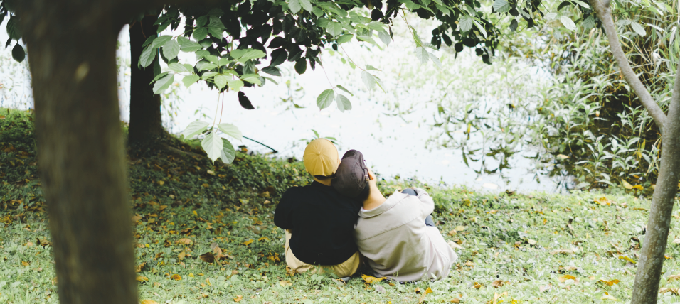

前言 🔗
真久以前就想欲起一个個人網站矣，大學三年仔的時陣捌佇 Medium 寫幾若篇文章，彼時猶無啥會曉講台語，寫台文嘛真食力。彼時的文章，有設計系模型課的教學文章，閣有討論字型佮台語文的文章。當初時並無想遐濟，這馬翻頭看才知影遮的文章對我後來的發展有影造成誠深的影響，教學的文章予我決定延一冬修教育學程，字型佮台語文的內容予我熟似真濟貴人，這兩个領域變做我這馬沐上深的社群。這馬我已經畢業，進入後一个人生的階段，真久無寫文章矣，是重新開始寫作的好時機。
Medium 的好佮䆀 🔗
以早佇 Medium 寫文章，這个平台的特色是真鼓勵長篇文章，介面佮內文的鋪排真四序，無廣告，而且對 SEO 誠友善，不止是我的朋友會看著我的文章，生份人嘛真容易就透過搜揣 ia̋n-jín 就揣著我的文章。
毋過這个平台猶是有以下的一寡仔問題
- 所有的更新佮經營攏是英語本位的，有當時仔會出現真影響非英文使用者體驗的更新
- 無支援台語文
- 版面鋪排無夠自由
畢竟是別人的平台，欲起欲倒攏隨在伊，咱使用者通好家己掌握的部份真少，規氣就來家己創一个個人網站，閣會當共家己需要的功能加入去。
網站介紹佮以後的寫作計畫 🔗
這个網站主要是使用靜態網頁產生器 Hugo ，套用 nodejh 的 theme-mini 主題為基礎，閣再加上一寡我家己寫的 CSS 佮 javascript 所完成的，上主要的特色是滿足我的台文佮華文寫作需求，逐篇文章頭前會標示語種，若是有標「台 | 華」的文章（像這篇）就代表這篇文章支援雙語，揤文章標題下跤的開關就通好切換語言。以後的文章嘛無一定攏是雙語的，猶是愛看我寫文章的目的決定。
九月開學季到矣，這是我頭一个毋是學生的學期，這个學期我佇士林衛女女中教生活科技，閣有佇公視台語台政論節目台灣新眼界做工讀生，以後應該會佇遮分享一寡生活中所拄著的代誌佮心得；自2020年彼篇台語文字的字型發展現況到今嘛兩冬矣，台語文的字型閣有真濟新的發展，我嘛沓沓仔咧拍算欲按怎共新發生的代誌介紹予逐家；這兩冬我嘛改變真濟，有一寡代誌的認知嘛佮以早無相𫝛矣，我會閣寫新的文章科普台語文字型的相關智識。
對這个網站的一寡向望 🔗
今是我拄畢業的時期，生活變化程度有影是真懸，欲做真濟決定，而且每一个決定攏會大大影響著日後的方向。最近社會嘛是較無穩定，年底的選舉欲到矣，奇奇怪怪的代誌一直會發生。社會環境加上個人拄畢業的雙重無穩定致使我的心情嘛綴咧起起落落，希望寫文章通好穩定我的心思，嘛向望我以後寫的文章有愈來愈濟人看，對社會產生一寡貢獻。
前言 🔗
很久以前就想架設一個個人網站了，大三時曾經在 Medium 寫過幾篇文章，當時我的台語口語還很糟，寫台文也很吃力。那時寫了設計系模型課教學的文章以及討論字型與台語文的文章之類的。寫作時並沒有想太多，現在回頭看才覺察到這些文章對我後來的發展真的是造成滿深遠的影響。教學相關的文章讓我後來延畢一年修完教育學程，字型與台語文的內容讓我後來認識許多的貴人。而這兩個領域也成為我現在涉足最深的社群。今年已經從台科畢業了，進入人生的下一階段，也好一陣子沒有寫文章了，現在是時候重新開始寫作了。
Medium 的好處與缺點 🔗
以前在 Medium 寫文章，這個平台的特色是鼓勵長篇文章，還有使用者介面和排版很舒服，沒有廣告，而且對於 SEO 很友善，不只是我的朋友會看到我寫的文章，陌生人也能夠輕易地從搜尋引擎查到我的文章。
但使用起來仍是有以下的一些問題
- 所有的更新與經營都是英語本位的，有時會出現很影響非英文使用者體驗的更新
- 不支援台語文
- 排版格式固定不自由
畢竟是別人的平台，決策權都不在自己身上，使用者能夠自己掌握的部份真的很少，不如來自己架設個人網站，可以完美的滿足自己的個人需求。
網站介紹以及之後的寫作計畫 🔗
這個網站主要是使用靜態網頁產生器 Hugo ，以及 nodejh 的 theme-mini 主題為基礎，在家上一些我寫的 CSS 與 Javascript 所完成的，最主要的特點是滿足我現在的台文與華文寫作需求，每篇文章前面會標示語言種類，若是標記「台 | 華」的文章（像是這篇）就代表這篇文章支援雙語，只要點擊文章標題下方的開關就能切換語言，之後不一定每篇文章都有雙語支援，仍要看我寫文章的目的決定。
九月開學季到了，這也是我第一個不再是學生身分的學期，這學期我在士林衛理女中教生活科技，還有在公視台語台政論節目台灣新眼界做工讀生，以後應該會在這邊分享一些生活中的瑣事和心得；此外，自從 2020 那篇台語文字的字型發展現況至今也已經兩年了，台語文的字型有不少新的進展，我仍在思索該如何將新的事情介紹給大家；兩年以來我也改變了不少，有一些事情的認知已經和以前不太一樣了，我還會再寫新的文章科普台語文字型的相關內容。
對網站的一些期許 🔗
現在是我剛畢業的時期，生活變動的程度真的滿高的，必須要做出許多抉擇，而且每個決定都會大大影響到日後的方向。最近社會也是不太穩定，年底選舉將至，奇奇怪怪的事情不斷的會發生。社會環境加上個人剛畢業的雙重不穩定，導致我的心情也總是隨之起伏。希望在這邊書寫文章能夠穩定自己的思緒，也期許我之後寫的文章有愈來愈多人看，對社會能產生一丁點的貢獻。